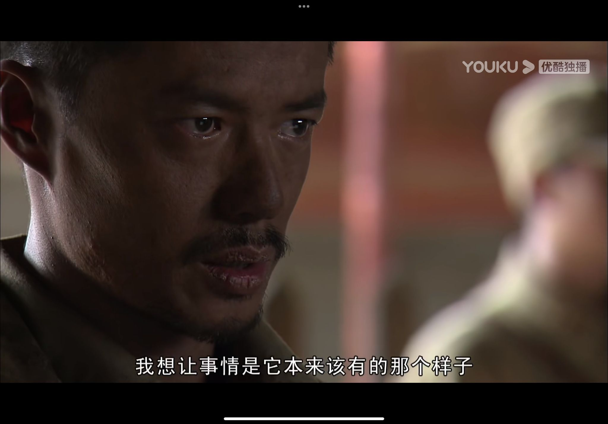

+++ date = ‘2021-12-31T23:02:18+08:00’ draft = false title = ‘注定无法忘记的2021’
+++
注定无法忘记的2021
回顾2021，有时也很难想象自己是如何一步一步爬出来，收拾心情，重新出发的，可能真的时间是一切的解药吧，但我总觉得时间只能淡化一些脑海中的印象，却抹不去留下的伤痕。 考完研后，看完了我觉得目前为止拍的最好的国产战争片《我的团长我的团》，片里每一位人物都深深的刻在我的心中，我的演艺圈男神也又多了一位，段奕宏。
自曝出身：计算机相关专业，20年本科就毕业了，武汉普通一本。第一年考了北邮，直接滑铁卢，不过也结识了到现在依然玩的非常好的数码达人朋友@指南针指南不指北 ，一样的北邮滑铁卢，不过他已经是市银行科技岗大佬了。 重整旗鼓，没有选择太高的目标，依然想去北京，想去体验帝都的拥挤与繁忙，也想体验体验中国互联网行业最发达的地方之一，于是选了北京工业大学。
最后考了391分，在今年计算机考研大环境下，不算特别高，但也不算低，至少所有考22408的学校应该都能过初试，出完成绩，招90+人的学校我考了13名，当时觉得只要正常准备应该就能实现我的北京梦，最后还是出了一些岔子（此中明细不想细说），戏剧性的，只差一个人录到我。当时看到综合成绩出来之后真的懵逼，头脑放空，完全不知道该干嘛。

我不是个非常积极的人，两年的努力毁于一旦，后悔，不甘，不知道多少情绪混合，开始哭，也开始颓废。当时也不敢颓废太久，只能边颓废边开始继续复习初试408相关，整理自己曾经的简历，把自己曾经做过的项目等等复盘回忆一下，然后开始找调剂。当时也不由想起龙文章那句话“我只是想让事情是他本来该有的那个样子”，我的初试成绩+复试准备，录取一个211真的很难吗，可是还是出了一些奇奇怪怪的幺蛾子。 走到调剂这条路真的就由不得自己，只能选择一些适合自己本身条件的学校，太差的又不想去，当时只有仨位置可以填，是真的纠结啊…. 其中的纠结与选择也不想多说，确实也错过了一些可能能去的好学校，最后兜兜转转来到了郑州大学。

我是河南人，高中在郑州呆了三年，说实话，最不想回到的城市就是郑州，高中三年是我最迷茫也是最黑暗的三年，各类奇奇怪怪复杂的事情都接踵而至，让我抬不起头来，也让我变得有些自卑，有些郁郁寡欢。郑州的空气，环境也让我觉得让人看不到现代大都市的感觉，好在今年来了之后也发现了郑州的变化，终于不是“雾气穿过她年轻的脖子”那个pm2.5日常爆表的郑州，虽然有时也会到100+，但至少能让我“自由呼吸”，环境、街道也改变了很多，可能这几年市容市貌上确实花了很多钱吧。

录取结束就给我的拯救者迭代了，再也不想用游戏本，换了个轻薄的yoga14s，买了倍思100w充电，把我破旧的903出了，换了g502。感谢typec让我能够一根线走天下（虽然502并不是…），换了轻薄本的我，真的觉得对于不打游戏的我来说，轻薄本才是真正的生产力….


刚经历完录取大起大落的我，算是可以松一口气，尽管结局没那么如意，但终究不算特别差。于是跟高中好朋友谋划一起去重庆，也算是一场说走就走的旅行，我们体验了山城的奇妙，正常走在路上都要爬山真是顶不住。之后又跟他一起比赛谁能吃辣，无辣不欢的我还是很想念在重庆吃的那些食物~
旅游完几天，我们就各回各家，都开始准备（面对）全新的研究生生活，刚回家的那天晚上，5.12日，她给我打了一通电话，电话开头支支吾吾停滞了十几秒钟，我有些意识到情况不对，她说了句：“你应该知道我什么意思吧。” 当时我就泪崩了，不想细谈我的感情，回头望去其实我也发现不了这段感情里面究竟错的是谁，因为本身这件事就无关对错。大概还差二十天就四周年的感情就此结束，她说其实去年末就想说，只是她觉得如果因为她的任何决定而影响我考研的结果，她都会非常自责，所以绝不能有这种事情发生。好的，这也都无所谓了，其实我都明白于她而言，说了结束再也没机会能够挽回，但我还是挽回了一次又一次，直到绝望。之后我又是无尽的哭泣，很难想象可能这最近十年加起来的泪水都没有今年流的多，各种各样的事情，又让我再次感叹“我只是想让事情是她本来该有的那个样子”，对于这段感情我真的没有想到会是这样的结局，没什么吵架，也没有什么三观上的奇奇怪怪的冲突，有的只是… 那段时间在家里洗碗都会边洗边哭，之后自己确实受不了了，想出去散散心，让自己能转移一下子注意力。
因为一直喜欢的老炮儿崔健在郑州有一场演出，当时谋划着去看看，于是又开始了第二场的散心旅行，这场旅行比较久，大概半个月，一路蹭吃蹭喝，从家里出发-郑州-驻马店-上海-回家，一路也见了很多许久未见的朋友，也是因为他们的安慰，让我能够少想一些难过的事情，虽然在这趟旅行中我也没少失眠到三四点，没少突然因为梦见人or事而惊醒。
很幸运有着这么一群朋友，真的让我感受到了温暖与幸福，有时想想其实这一生有朋友就够了，哪里还能期盼那么多呢…. 回到家之后，其实也有家里的一些朋友，包括跟我一起考研的好朋友，一直在鼓励我，安慰我，也陪我一起吃饭，没少在家里吃一些美食。 真正回家这时已经到了七月份，我开始反思自己，觉得自己过的太颓废，也期望着能够改变自己，只有过的更加充实，同时把自己变得更加强大，才能真正握住一些东西，于是我又开始跑步，开始练字，学习行楷（这其实也是她给我带来的习惯），开始刷刷leetcode，学学敲敲的一些技术。上一次跑步还是考研的时候，那段时间也是减肥+锻炼意志，瘦了不少，也把身体素质提高了蛮多。
当时考研还有之前跑的时候有时候也没记录，跑到八月份Keep软件一共记录了600km，这段时间绕着街道跑，大概配速五分二十几，确实也不算快，但也不能说很慢。 中间又把之前买的ipad pro出了换了m1的，其实看我酷安动态那些二手都能看出来。
生活又这样不紧不慢的过去，今年年中郑州又是洪水又是疫情，属实难顶，我的开学日期也是一拖再拖，一直拖到十月中旬。
返校之前，那段时间心情算是平复了很多，不再会突然想哭，也不再一直辗转反侧。碰巧开学在十一之后，就约着大学同学一起去杭州游玩，他们有的工作了，也有的正在读研，多段不同的交流，让我心情放松的同时，也让我多了很多对自己的思考。
唯一不好的体验是雷峰塔，太tmxx了，排了长队之后，给了它一个…
回家之后基本就是准备去学校，到了学校之后，对于郑大北校区的观感大概也就小破旧，算是个能凑合过的地方，之后在工位搞了一个显示器。
工位略显凌乱，现在又配了个小架子给显示器垫起来。 半年的研究生生活基本上都是单调乏味的，教学楼，工位，食堂，寝室四头跑，唯一的乐趣也就搜搜新歌，逛逛b站，看看有哪些好的翻弹，好的现场。这段时间我迷上了万青，迷上了韦礼安，也在试图跟踪各种各样搞花活的潮流音乐，想来想去，从小到现在还一直坚持的就是对音乐的热爱了。还有些购置的小东西忘记时间就在最后一起总结了。
转眼年末，今年这一年我过得既复杂又难过。有些伤痕我真的不知道需要多久才能抹去，但无所谓了，至少我也能够做到收拾心情，勇敢地继续向前冲。
暂时的目标就是等22年来之前跑满1000km，欢迎2022，并对痛苦的2021说句：去nm的。 最后，逼哥镇帖。
最后的最后，如果有郑州的酷友，喜欢听万青，韦礼安，艾怡良等等走在最近流行音乐最前端的酷友，或是郑大的酷友，都可以滴滴我。交个朋友，甚至拉个群一起交流交流~